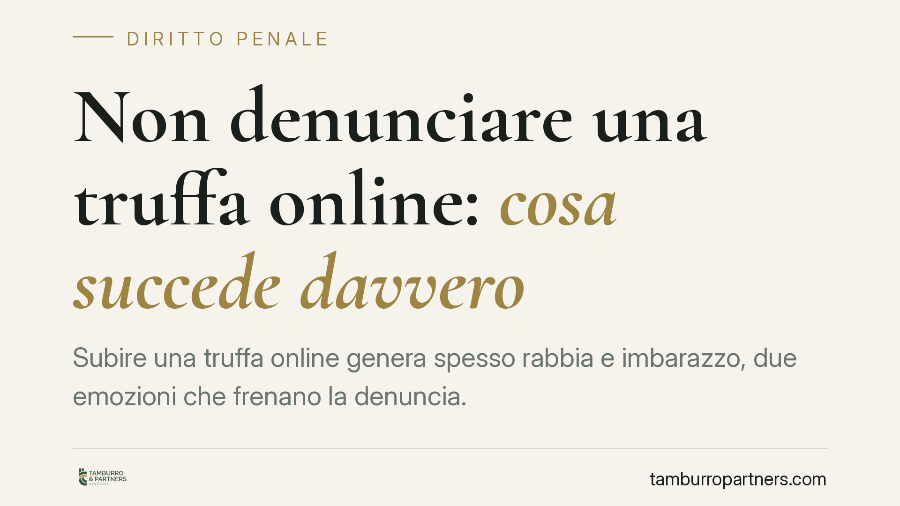

Non denunciare una truffa online: cosa succede davvero
Subire una truffa online genera spesso rabbia e imbarazzo, due emozioni che frenano la denuncia. Ma non attivarsi ha conseguenze concrete: si rischia di perdere il termine per la querela e di compromettere il recupero delle somme. Vediamo cosa prevede la legge, quando il reato procede d'ufficio e quali passi conviene compiere subito.

Il fatto: inerzia dopo una truffa telematica
La truffa online è oggi una delle fattispecie più diffuse: falsi annunci di vendita, phishing bancario, finti investimenti, profili clonati sui social. Chi la subisce, spesso, non denuncia: per la modesta entità del danno, per la vergogna, o per la convinzione che "tanto non serve a nulla".
Questa scelta, però, incide direttamente sulla possibilità di ottenere giustizia e, soprattutto, di recuperare il denaro. Capire il meccanismo processuale aiuta a decidere con consapevolezza.
Inquadramento normativo
La truffa è disciplinata dall'art. 640 del codice penale: chi, con artifizi o raggiri, induce taluno in errore procurandosi un ingiusto profitto con altrui danno, è punito con la reclusione e la multa.
Il punto decisivo riguarda la procedibilità. La truffa "semplice" è procedibile a querela della persona offesa: senza querela, il reato non viene perseguito. Il termine per proporla è fissato dall'art. 124 c.p. in tre mesi dal giorno in cui si è avuta notizia del fatto costituente reato; superato quel termine, il diritto di querela si estingue.
La procedibilità d'ufficio — cioè l'attivazione del processo indipendentemente dalla querela — non scatta per qualsiasi aggravante. Opera, ai sensi dell'ultimo comma dell'art. 640 c.p., solo in presenza di specifiche circostanze, tra cui l'ipotesi in cui il fatto sia commesso a danno dello Stato o di altro ente pubblico, o quando ricorre l'aggravante dell'art. 61 n. 7 c.p. (danno patrimoniale di rilevante gravità). È quindi errato ritenere che ogni truffa aggravata diventi automaticamente perseguibile senza querela.
Sul tema della modalità telematica si discute se essa integri la minorata difesa dell'art. 61 n. 5 c.p. (approfittamento di circostanze che ostacolano la difesa della vittima, come la distanza fisica e lo schermo dell'anonimato). Secondo un orientamento giurisprudenziale ciò può configurarsi, ma si tratta di una valutazione da compiere caso per caso, non di una regola automatica. Va inoltre ricordato che la sola minorata difesa non rende, di per sé, la truffa procedibile d'ufficio.
Implicazioni pratiche per la vittima
La conseguenza più tangibile dell'inerzia è la perdita del termine di querela. Trascorsi i tre mesi, nei casi procedibili a querela, il reato non potrà più essere perseguito su impulso della persona offesa.
Occorre distinguere due piani che spesso vengono confusi:
- il procedimento penale, che mira ad accertare la responsabilità dell'autore e ad applicare la pena;
- la tutela risarcitoria, cioè il recupero delle somme perdute, che può avvenire costituendosi parte civile nel processo penale oppure con un'autonoma azione civile.
Non denunciare significa, nella pratica, rinunciare a entrambe le vie quando la truffa è procedibile solo a querela.
Un ulteriore profilo riguarda la tenuità del fatto (art. 131-bis c.p.), che può condurre alla non punibilità per offese di particolare lievità. Anche qui non esistono automatismi: l'applicabilità resta una valutazione del giudice, da effettuare in concreto sulla base dell'entità del danno e delle modalità della condotta.
Cosa fare in concreto
- Conserva ogni prova digitale subito: screenshot delle conversazioni, e-mail, ricevute di pagamento, IBAN e dati del beneficiario, link e profili utilizzati. Non cancellare nulla.
- Contatta immediatamente la banca o il gestore di pagamento per segnalare l'operazione e verificare la possibilità di blocco o storno (strumenti come il chargeback hanno tempi stretti).
- Non ricontattare il truffatore e non tentare accordi diretti: i messaggi successivi possono inquinare la ricostruzione dei fatti ed esporre a ulteriori raggiri.
- Sporgi querela presso Polizia Postale o Carabinieri entro il termine di tre mesi, allegando tutta la documentazione raccolta.
- È opportuno valutare l'assistenza di un legale per inquadrare la procedibilità, verificare la sussistenza di eventuali aggravanti e impostare la strategia di recupero del danno.
Conclusione
L'inerzia non protegge la vittima: nella maggior parte dei casi la espone soltanto alla perdita del termine e delle possibilità di rivalsa. Agire presto, conservando le prove e presentando tempestiva querela, è la condizione per tenere aperte sia la via penale sia quella risarcitoria.
---
*Contributo informativo a cura di Tamburro & Partners - Avv. Giuseppe Tamburro. Non costituisce parere legale.*
Ogni condominio ha una storia a sé.
Se gestisci un'amministrazione e vuoi un confronto su una specifica questione condominiale, scrivi allo studio. Ti rispondiamo entro un giorno lavorativo.